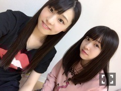

| 2016/09 14 Wed | people≠purple by. MaAyA_(．．*)vol.121 |
みなさんこんばんはー！
相楽伊織です！
前回のブログの写真だと長さ分からないなと
思っていたら
案の定コメントで
沢山ツッコまれてしまったので
こちらの写真載せました(^^;
このくらいの長さです♪♪
~いおり庵~
 最近移動中に聴いてる曲は何ですか？
最近移動中に聴いてる曲は何ですか？
色々聴くけど
BIGBANGさんと
Justin Bieberが多いかな！
KinKi Kidsさんも聴くよ！
あと、安室奈美恵さんもよく聴くし
BUMP OF CHICKENさんとか
back numberさんも！
私音楽大好きだから
移動中は必ず聴いてる♪♪
最近好きなのは
GLIM SPANKYさん！！
｢ONE PIECE FILM GOLD｣の
主題歌を歌ってる方なんだけど
前から好きだったし
最近もよく聴いてます(^-^)/
あとは動画サイトで｢洋楽｣で検索して
ランダムで流したりしてる♪♪
前までは洋楽ばかり聴いてたけど
今はどっちも聴く！！
この写真お気に入りなんだけど
この画像ひなぴょんが加工してくれたの♡
最近ひなぴょんが
私のこと褒めてくれるから
すごい嬉しいの♡
なんか、ひなぴょんて
｢かわいい女の子が好き｣
みたいなイメージが強いから
そーゆー人に言われると倍嬉しいよね♡
、、、
決して
私が可愛いって言ってる訳ではないけど
この文章的に誰が読んでも
そー、、(*_*)
あぁ、、、
あぁぁ、、
違うんだ、そーゆー事じゃないんだ、、
8月お誕生日の方
おめでとうございます♡
素敵な1年になりますように...♡
すごい情緒不安定な
ブログになっちゃってるけど
私は正常ですし、
元気なので心配はなさらず！！！

ね、元気なの(^^)
 楽天SHOWTIME 乃木坂ゴルフ倶楽部
楽天SHOWTIME 乃木坂ゴルフ倶楽部
今日もゴルフロケに行ってきましたー！
また配信されたら見てください♪♪
のぎ天2
GREEN GORA 9/16 発売
46SHOW 9/17 放送
シークレットグラフィティーを披露します！
よろしくお願いしますm(_ _)m
i o r i .

コメント(253)
2016/09/14 21:42